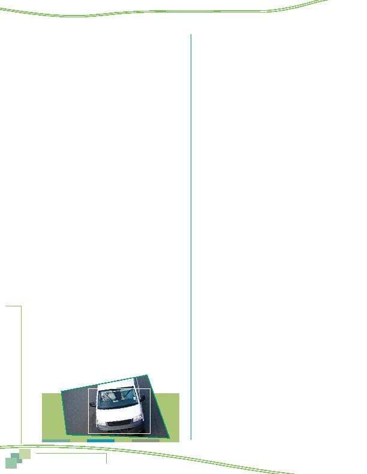

MWCOG-Comm
uter Conn
ecti
on
s-- 2010 State o
f th
e Comm
ute Report
8 6
5 save money
6 save time
7 gas prices too high
8 tired of driving
9 prefer to drive, wanted to drive
10 safety
11 no vehicle available
12 car became available, additional car in household
13 to stay with family/children
14 HOV lanes too congested
15 congestion (other)
16 always used
17 close to work or transportation pick up/drop off
location
18 afraid of or didn't like previous form of transportation
19 stress
20 weather
21 bought hybrid vehicle
22 convenient (NOT AN ANSWER, PROBE FOR WHY IT'S
CONVENIENT)
23 to get exercise
24 concerned about the environment, global warming
Commute Services/Programs
25 new option that became available
26 special program at work
27 pressure or encouragement from employer
28 GRH
29 Ozone action/Code Red days
30 no parking
31 parking expense, parking cost too high
32 found carpool partner
33 NuRide (VA carpool incentive)
34 SmarTrip/SmartBenefit, Metrochek, transit subsidy,
vanpool subsidy
35 Commuter Choice Maryland
Information/Promotion
36 advertising
37 initiated request/looked for information on my own
38 info. from Commuter Connections/Council of
Governments/COG/800 number
39 Commuter Connections web site
40 other web site
41 word of mouth/recommendation
42 information from transit agency
43 saw highway sign
44 yellow pages
45
Other
88 Don't know
99 Refuse
ALTERNATIVE MODE PATTERNS
IF Q15 = 5, 6, 7, CONTINUE, OTHERWISE, SKIP TO Q29
28 Now I'd like to ask you about your current car/
vanpool
(FROM Q15)
. Including yourself, how many
people usually ride in your carpool or vanpool?
(If more than 1 answer in Q15, select 1 using this
priority: vanpool, carpool, casual carpooling/slug.)
________total people in pool (must be more than 1)
IF Q15 = 5, 6, 7, 8, 9, 10, 11, 12, OR 13, CONTINUE USING
THE MOST COMMON ALTERNATIVE MODE, OTHERWISE, SKIP
TO INTRO BEFORE Q34
29 How do you get from home to where you meet
your
<Q15 ALT MODE: carpool, vanpool, buspool, bus,
or train>?
1 picked up at home by car/vanpool
(SKIP TO INSTRUCTIONS BEFORE Q34)
2 drive alone to driver's home or drive alone to
passenger's home
3 drive to a central location, like park & ride,
or train or subway station
4 dropped off or another car/vanpool
5 bicycle
6 motorcycle
7 walk
8 I am the driver of car pool/vanpool
(SKIP TO
INSTRUCTIONS BEFORE Q34)
9 bus/transit
10 other (SPECIFY)_____________
30 How many miles is it one way from your home
to where you meet your
<Q15 ALT MODE: carpool,
vanpool, buspool, bus, or train>? (IF LESS THAN 1
MILE, ENTER 0.5)
________miles
TELECOMMUTE
INSTRUCTIONS BEFORE Q34
IF Q13 = 1 OR Q15 = 2 ANY DAY, CONTINUE, OTHERWISE,
SKIP TO INTRO BEFORE Q44
IF TELEALL, DO NOT READ INTRO TO Q34,
SKIP DIRECTLY TO Q34
INTRO TO Q34: Now I have a few more questions about
telecommuting.
34 How long have you been telecommuting?
_______ months (CONVERT YEARS TO MONTHS)
999 Don't know/refused
IF TELEALL, AUTOCODE Q36 = 1, THEN SKIP TO Q42
Appendix--Survey Questionnaire